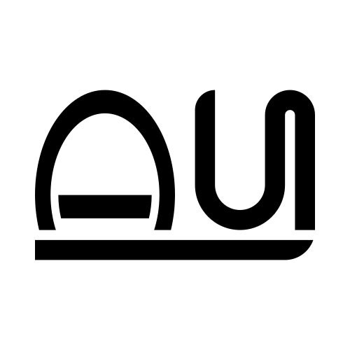

Auride.love
Okami speedrunner, web developer, vector artist. Spread love.
Pronounce it like Aura + Chloride.
Socials:
Discord: auride
YouTube: Auride
Twitch: LoveAuride
Bluesky: auride.love
Speedrun.com: Auride
MyAnimeList.net: Auride
MyVideoGameList: Auride
Tatoeba (Sentences/Audio): Auride
itch.io: Auride
Reddit: Auride
Cohost: Auride (defunct)
Twitter: LoveAuride (locked)
Tumblr: LoveAuride (inactive)
Works:
(Anything not saved will be lost.)
- Building wikis and other resources for speedrunning